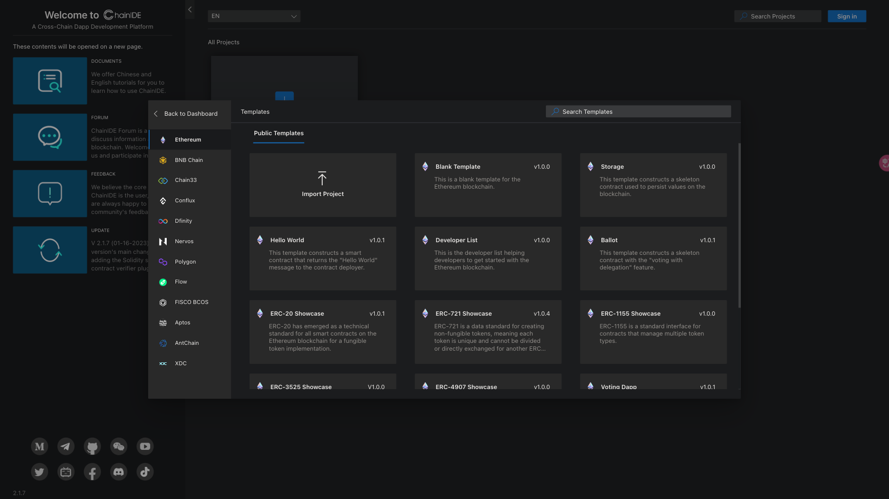

PC端 — ShareX
项目介绍
ShareX是基于AnyQuant提供的A股数据而开发的股票分析软件，开发的目标是对股票数据进行可视化展示，运用一定的统计方法，来分析股票的历史走势、股票行业的热门度。
目标人群
期望为股民提供更加方便快捷的查看股票的途径，帮助他们分析股票走势，从而使他们能够在股票市场中减小出现亏损的风险，赚取更多的利润。对于新入市的股民来说更为友好。
我的贡献
sharex本身只是一个课程作业，但是我们从中收获远大于此。我们学到了软件开发的方法，股票相关的知识，还进入了课程比赛的决赛。在这个项目中，我主要负责设计和前端开发，定义部分数据展示方式并实现。
项目背景
ShareX是一个主要从开发角度出发进行设计的项目，我们严格遵循《软件工程与计算（卷三）》的软件开发流程，完成软件的需求、设计、用例测试等，并经历了三个迭代的设计，完成了从PC端到WEB端的跨平台转变。

前期调查研究
因为涉及到股票相关的专业知识，我们小组在前期设计阶段进行了大量研究和学习，包括向专业人士求教，来探索用户需求。包括股票的基本知识，用户最关心的数值和指标，用户最想知道哪些相关知识等等……最终确定产品的需求。

迭代一成果展示

迭代二成果展示

迭代三成果展示

团队建设